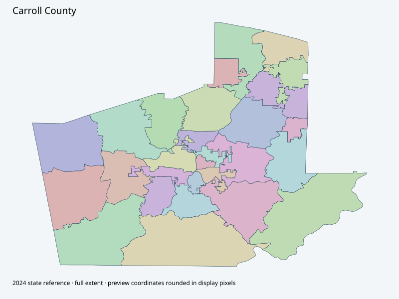

Map index · 28 explicit-FIPS 2024 map rows; 28 historical result identities. No approved crosswalk.

Full native coordinate/attribute extraction (gzip JSON) · Original complete statewide ZIP
Official District Maps page links County Precincts2026. Original June2026 one-page map shows28 listed precincts; separate2024 map retained. Neither map count nor shared labels approves a historical/current crosswalk.
Full objects, county source IDs/clocks and attributes: all 2,701 native contexts. isVirtual:false and source label precinct do not prove physical geometry.
| Source name | Full source GUID | Breakdown ordinal | Source | Map status |
|---|---|---|---|---|
| Bethany | 01000000-d884-2e72-d77b-08dcda4b8ac2 | 0 | 2024NovGen--carroll-county-ga | unreviewed / no approved map join |
| Bonner Rec Ctr | 01000000-d884-2e72-5db8-08dcda4b8ac5 | 1 | 2024NovGen--carroll-county-ga | unreviewed / no approved map join |
| Bowden Sr Ctr | 01000000-d884-2e72-f0a0-08dcda4b8ac7 | 2 | 2024NovGen--carroll-county-ga | unreviewed / no approved map join |
| Carroll EMC | 01000000-d884-2e72-8378-08dcda4b8aca | 3 | 2024NovGen--carroll-county-ga | unreviewed / no approved map join |
| Catherine Hardy | 01000000-d884-2e72-f143-08dcda4b8acc | 4 | 2024NovGen--carroll-county-ga | unreviewed / no approved map join |
| Center Point | 01000000-d884-2e72-8db2-08dcda4b8ad0 | 5 | 2024NovGen--carroll-county-ga | unreviewed / no approved map join |
| Clem Comm Ctr | 01000000-d884-2e72-fa3d-08dcda4b8ad2 | 6 | 2024NovGen--carroll-county-ga | unreviewed / no approved map join |
| Fairfield Rec Ctr | 01000000-d884-2e72-6119-08dcda4b8ad5 | 7 | 2024NovGen--carroll-county-ga | unreviewed / no approved map join |
| VR Gold Dust Park | 01000000-d884-2e72-d752-08dcda4b8ad7 | 8 | 2024NovGen--carroll-county-ga | unreviewed / no approved map join |
| Kansas | 01000000-d884-2e72-3c41-08dcda4b8ada | 9 | 2024NovGen--carroll-county-ga | unreviewed / no approved map join |
| Lakeshore Rec Ctr | 01000000-d884-2e72-b0d5-08dcda4b8adc | 10 | 2024NovGen--carroll-county-ga | unreviewed / no approved map join |
| Mars Hill | 01000000-d884-2e72-0f64-08dcda4b8adf | 11 | 2024NovGen--carroll-county-ga | unreviewed / no approved map join |
| Midway | 01000000-d884-2e72-6f03-08dcda4b8ae1 | 12 | 2024NovGen--carroll-county-ga | unreviewed / no approved map join |
| Mount Holly | 01000000-d884-2e72-2e8b-08dcda4b8ae5 | 13 | 2024NovGen--carroll-county-ga | unreviewed / no approved map join |
| Mt Zion | 01000000-d884-2e72-9c77-08dcda4b8ae7 | 14 | 2024NovGen--carroll-county-ga | unreviewed / no approved map join |
| Neva Lomason | 01000000-d884-2e72-fd22-08dcda4b8ae9 | 15 | 2024NovGen--carroll-county-ga | unreviewed / no approved map join |
| Oak Grove | 01000000-d884-2e72-24db-08dcda4b8aed | 16 | 2024NovGen--carroll-county-ga | unreviewed / no approved map join |
| Old Camp Church | 01000000-d884-2e72-c49a-08dcda4b8aef | 17 | 2024NovGen--carroll-county-ga | unreviewed / no approved map join |
| Powell Park Rec Ctr | 01000000-d884-2e72-4fc8-08dcda4b8af2 | 18 | 2024NovGen--carroll-county-ga | unreviewed / no approved map join |
| Roopville | 01000000-d884-2e72-cdd1-08dcda4b8af4 | 19 | 2024NovGen--carroll-county-ga | unreviewed / no approved map join |
| Shiloh | 01000000-d884-2e72-59a3-08dcda4b8af7 | 20 | 2024NovGen--carroll-county-ga | unreviewed / no approved map join |
| Tabernacle | 01000000-d884-2e72-ded7-08dcda4b8af9 | 21 | 2024NovGen--carroll-county-ga | unreviewed / no approved map join |
| Temple City | 01000000-d884-2e72-5d1e-08dcda4b8afc | 22 | 2024NovGen--carroll-county-ga | unreviewed / no approved map join |
| Temple County | 01000000-d884-2e72-0215-08dcda4b8aff | 23 | 2024NovGen--carroll-county-ga | unreviewed / no approved map join |
| Townsend Ctr UWG | 01000000-d884-2e72-ac57-08dcda4b8b01 | 24 | 2024NovGen--carroll-county-ga | unreviewed / no approved map join |
| Tyus | 01000000-d884-2e72-1839-08dcda4b8b04 | 25 | 2024NovGen--carroll-county-ga | unreviewed / no approved map join |
| VR Sports Complex | 01000000-d884-2e72-2226-08dcda4b8b07 | 26 | 2024NovGen--carroll-county-ga | unreviewed / no approved map join |
| Whitesburg Rec Dept | 01000000-d884-2e72-fbef-08dcda4b8b09 | 27 | 2024NovGen--carroll-county-ga | unreviewed / no approved map join |
| Original row ordinal | DISTRICT | PRECINCT_I | PRECINCT_N |
|---|---|---|---|
| 95 | 0451111 | 1111 | BOWDON |
| 96 | 0451533 | 1533 | TYUS |
| 105 | 045714BW | 714BW | OLD CAMP |
| 106 | 045713 | 713 | ROOPVILLE |
| 107 | 045715 | 715 | OAK GROVE |
| 110 | 0451483 | 1483 | CLEM |
| 255 | 045682 | 682 | WHITESBURG |
| 1159 | 0451006 | 1006 | KANSAS |
| 1171 | 0451371 | 1371 | SHILOH |
| 1172 | 0451240 | 1240 | MT ZION |
| 1173 | 045714A4 | 714A4 | UWG |
| 1174 | 045714A1 | 714A1 | CATHERINE HARDY |
| 1175 | 045714A6 | 714A6 | TABERNACLE |
| 1176 | 045714A5 | 714A5 | NEVA LOMASON |
| 1177 | 0451496 | 1496 | MT HOLLY |
| 1178 | 045714BN | 714BN | CARROLL EMC |
| 1182 | 045714A3 | 714A3 | BONNER |
| 1183 | 045714A2 | 714A2 | LAKESHORE |
| 1184 | 045501 | 501 | BETHANY |
| 1185 | 0451152 | 1152 | CENTER POINT |
| 1186 | 0451122 | 1122 | MIDWAY |
| 1187 | 045650 | 650 | TEMPLE CITY |
| 1188 | 045649 | 649 | TEMPLE COUNTY |
| 1189 | 045640 | 640 | VR SPORTS COMPLEX |
| 1190 | 045641 | 641 | VR GOLD DUST |
| 1310 | 0451542 | 1542 | MARS HILL |
| 1311 | 0451540 | 1540 | FAIRFIELD |
| 1314 | 045642 | 642 | VR POWELL PARK |